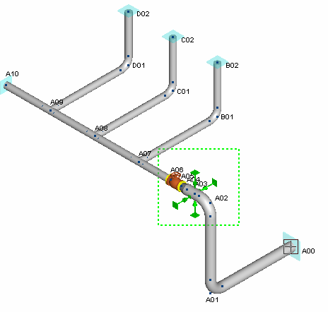
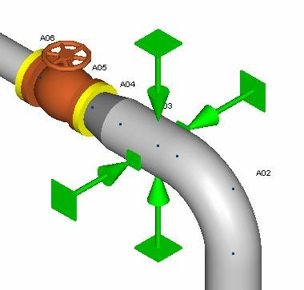
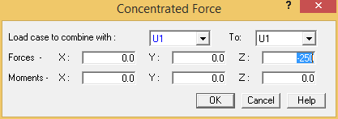
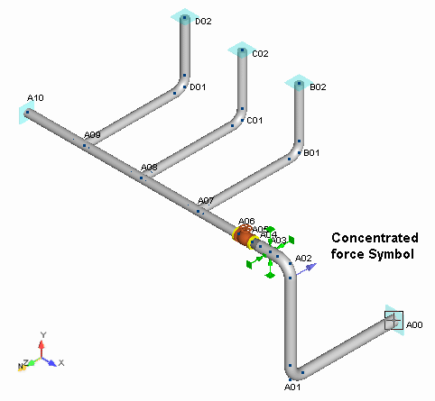

Drag and Drop Insertion of Concentrated Load
In this section you will add a concentrated force at bend point A02 N.
- Using the techniques described in previous chapters, create the zoom window shown below. Use
Show > Color Plots > Clear to disable showing temperature plot.

- Define the zoom area as shown above. The model appears as shown in the following figure.

- Select point A02 N, then select Insert > Xtra Data > Concentrated Force to display the
Concentrated Force dialog.
- You must associate the concentrated load with a load case. In this example, you will assume the load to be an occasional load (i.e., from a relief valve opening) so that AutoPIPE will automatically combine it properly for piping code stress calculations. Select U1 from the Load case to combine with field.
- Input - 250 {-980} kg in the Z Forces field.

- Press OK to accept the values and close the dialog. A concentrated force symbol is placed at point A02 N to indicate that a load has been applied at that point.
-
.png) Select View >
Zoom-Pan > Zoom Extents to view the extents of the
model as shown below.
Select View >
Zoom-Pan > Zoom Extents to view the extents of the
model as shown below.
